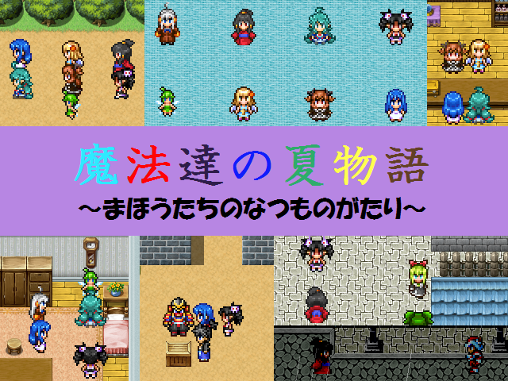

最高にCOOLな作者コメント：
8月27日更新:
文字フォントとシステムグラフィックを変更しました。
おまけの3つ目を追加しました。
やや長めの見るゲを2本収録。時間軸は前作(GW祭2016作品)より後です。
前作同様、他作者様の作品の設定や話、ネタがいくつか含まれています。
もしもシリーズを初めてやる方のための「初心者の部屋」なるものも設置！(圧倒的はい説)
話は長めですがその分セーブポイントも多めに設けています。
『アイスさんの悩み事』プレイ時間目安:85～100分
アイスⅢ主役のお話。暑さが増してきたある日のこと、いつものようにダジャレをみんなの前でかますアイスさん。だが、みんなからあまりいい反応が返ってこないことが悩み事となっていた。そして、そんな彼女の心の傷口に塩を塗るような出来事が……。
『魔法達の夏旅行』プレイ時間目安:70～80分
世間では夏休み。そんなある日、わてりとだくねすは旅行冊子を見ていた。そしてその冊子を見たゴメスが、わてり達を旅行に連れていってあげようと話を持ちかけた。
果たしてどんな旅行になるのやら。
おまけとして、前作から今作までに投下したksg2本とksgにするまでもなかった小ネタ2つと+α収録。
作品配信許可：OK/動画公開許可：OK
管理人コメント：
見るゲにまで初心者の部屋があるとはなんて親切なんだ泣いた
↓この作品の感想を書く